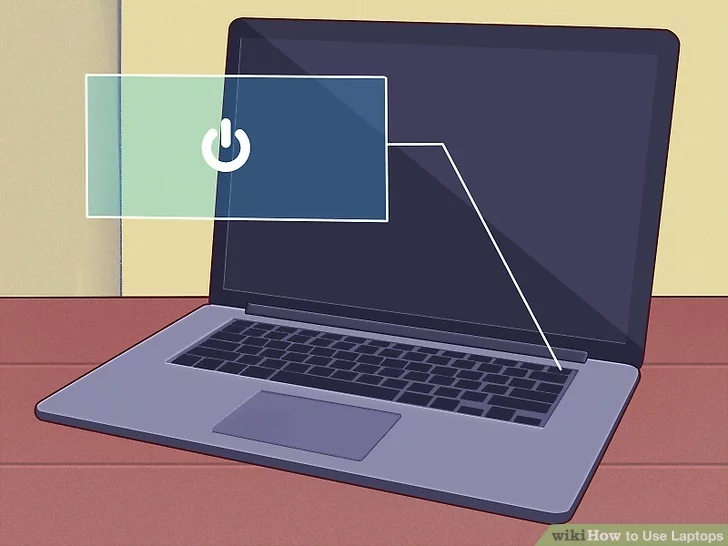
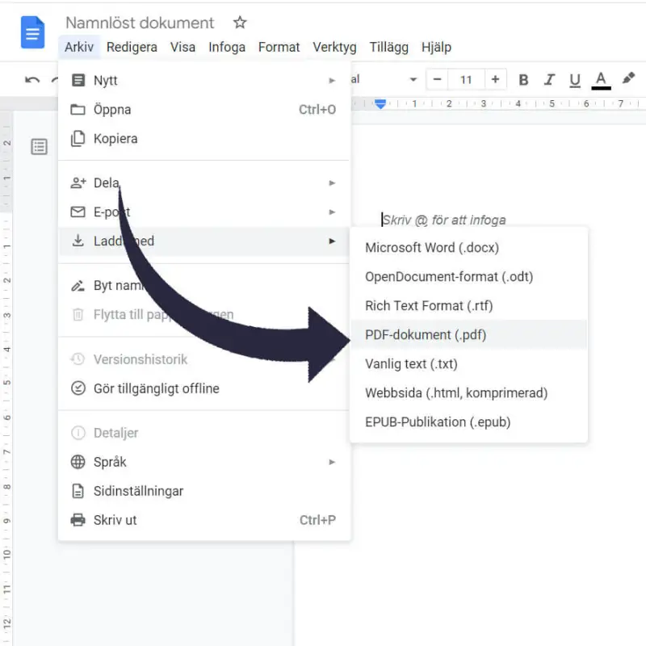
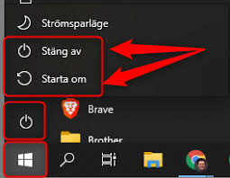

Hur man startar en dator
Tryck på strömbrytaren som vanligtvis finns på framsidan eller sidan av datorn. Vänta tills datorn startar upp och operativsystemet laddas.
Hur man använder mus och tangentbord

Musen används för att peka och klicka på objekt på skärmen. Tangentbordet används för att skriva text. Prova att klicka på ikoner och skriva text i ett ordbehandlingsprogram.
Hur man öppnar ett program genom att söka på namnet:

Klicka på startmenyn (Windows-ikonen) och välj programmet du vill öppna från listan. Sök på det programm du söker på den vita sök-Ikonen.Dubbelklicka på ikonen för att starta programmet.
Hur man laddar ner ett dokument i Google Dokument
Klicka på "Arkiv" i menyraden och välj "Ladda ned". Ge dokumentet ett namn och välj hur du vill spara det. Klicka sedan på "klar".
Hur man stänger av en dator
Klicka på startmenyn (Windows-ikonen) och välj "Stäng av" ikonen. Vänta tills datorn har stängts av helt innan du drarner hela skärmen.